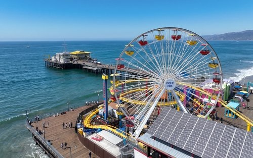

SUV premium
Ford Expedition Max o similar. La retiran en Avis del aeropuerto y la entregan en Avis Downtown Long Beach el día que se embarcan.
En Santa Mónica se estaciona en el Civic Center, a 3 min a pie del hotel: USD 5 por día el fin de semana y USD 14 el lunes (solo tarjeta).
Sandbourne Santa Monica, Autograph Collection
Su plan en Los Ángeles
Una propuesta, a su ritmo. Pueden moverla como quieran.
- 06:15Aterrizan en LAX, pasan migración, retiran maletas y la SUV en Avis.
- 09:00Llegan al hotel: dejan las maletas en custodia, estacionan la SUV y usan duchas, sauna y piscina para cambiarse.
- 10:00Desayuno tranquilo en Marelle, el restaurante del hotel (pidiendo preparación sin gluten), o en un café cercano.
- 11:30Paseo al sol por el muelle de Santa Mónica, donde termina la Ruta 66, y Third Street Promenade.
- 15:00Check-in en las habitaciones, ducha y siesta.
- 19:30Cena relajada a pasos del hotel, por ejemplo en True Food Kitchen (carta sin gluten).
- 10:00Getty Center: tranvía a la colina, miradores, Central Garden, jardín de cactus y obras de Van Gogh y Monet.
- 12:45Beverly Hills: almuerzo con opciones sin gluten (Kreation Organic o Urth Caffé), foto en el letrero de Beverly Gardens Park y paseo por Rodeo Drive.
- 15:00Hollywood Boulevard: huellas del Teatro Chino, Dolby Theatre y Paseo de la Fama.
- 17:15Walt Disney Concert Hall: el Gran Vestíbulo, la tienda LA Phil y el jardín Blue Ribbon en la terraza.
- 18:15Vuelta a Santa Mónica por la autopista y cena.
- 08:30Desayuno, check-out y maletas a la SUV.
- 09:30Manejo a Long Beach (unos 45 min).
- 10:30Devuelven la SUV en Avis Downtown Long Beach y toman un Uber XL (20–25 min) al terminal de cruceros de San Pedro.
- 16:00El Voyager of the Seas zarpa rumbo a México.
Imperdibles
Lo que no se pueden perder en estos dos días.
Guía del Disney Hall para leer en el lugar
El regalo de Lillian Disney. Frank Gehry lo diseñó y se inauguró en 2003. Nació en 1987 con una donación de 50 millones de dólares de Lillian Disney, la viuda de Walt, que quería regalarle a la ciudad un espacio abierto a la música.
Velas de acero. Gehry, amante de la navegación a vela, lo imaginó como un barco con las velas desplegadas. Son más de 6.000 paneles curvos, todos distintos, calculados con un programa de la industria aeroespacial. Al principio algunos brillaban tanto que encandilaban a los vecinos, y en 2005 los lijaron hasta el acabado mate de hoy.
La sala de estar de la ciudad. En el Gran Vestíbulo no hay líneas rectas: las columnas parecen troncos de árbol, revestidas en abeto Douglas, la misma madera de la sala de conciertos, elegida para que suene como un instrumento de cuerda.
Una rosa para Lilly. Subiendo por las escaleras exteriores está el jardín Blue Ribbon. En el centro hay una fuente con forma de rosa hecha con miles de trozos de porcelana azul y blanca de Delft: las flores y la porcelana favoritas de Lillian. Es el rincón preferido de Gehry.
Comer tranquilos en Los Ángeles
Los Ángeles tiene muy buena cultura sin gluten. Estos quedan cerca del hotel:
- 100 % sin glutenErin McKenna's Bakery1415 Montana Ave, Santa Mónica
- Panadería sin gluten (y vegana) con desayunos y almuerzos. Ideal para el sábado en la mañana.
- 100 % sin glutenModern Bread and Bagel1511 Montana Ave, Santa Mónica
- Bagels, pan y pastelería, todo sin gluten.
- Con cuidadoTrue Food KitchenSanta Monica Place, a pasos del hotel
- Carta con opciones sin gluten marcadas. No es una cocina 100 % sin gluten: avisen que es por celiaquía.
Antes de embarcar, avisamos a la naviera para que tengan comida sin gluten a bordo.
Llegan a las 6 de la mañana y la habitación se entrega en la tarde:
- Una muda de ropa liviana (en febrero amanece fresco, 12–15 °C, y al mediodía sube a unos 20 °C).
- Traje de baño, para la piscina del hotel.
- Snacks sin gluten para el vuelo y la espera.
- Cargadores y adaptador de enchufe tipo A/B (Estados Unidos).